This document presents the progress of the knowledge management project developed for NexaTech Solutions, a fictitious technology company. It describes the company, maps the knowledge life cycle, presents an ontology and conceptual graph of the organizational knowledge, explains how the prototype works, and shows evidence of its execution: screenshots, classification results, semantic search examples and the practical exercises of Topics 1 to 6 that contributed to the project.
The prototype is a Python application that stores technical documents, classifies them automatically and retrieves them with natural-language queries. Source code, dataset, test documents and results are in the repository: https://github.com/Andres145876/NexaTech-Knowledge-Management.
The project at a glance
102documents in the committed dataset
4knowledge categories
92.3%hold-out accuracy of the classifier (85.1% in 5-fold cross-validation)
8 / 8new test documents classified correctly
6semantic search examples
All screenshots and figures in this version were produced with the dataset committed to the repository (DATA/documents.csv, 102 documents), so the application and the scripts show the same numbers.
1. Description of the fictitious company
NexaTech Solutions is a fictitious mid-sized Latin American company with about 400 employees. It builds custom software and sells managed IT services, which include cloud hosting, connectivity, information security and 24/7 technical support. Its clients are banks, retailers and public agencies.
Main activities
Technical support: agents solve client incidents and accumulate fixes, workarounds and knowledge of client environments.
Software development: engineers produce architectural decisions, code, technical designs and development guidelines.
Infrastructure operations: network and cloud engineers monitor services, plan capacity and handle outages.
Cybersecurity: analysts define security policies, control access to accounts and respond to security incidents.
Management: leaders use reports, contracts and client feedback to set priorities and investments.
Documents and knowledge resources it manages
The daily work of the company produces policies, procedures, technical guidelines, configuration standards, capacity plans, runbooks, support guides and incident reports. In the prototype these documents are organized in four knowledge categories: Cybersecurity, Infrastructure, Software Development and Technical Support.
Why a knowledge management system is needed
Knowledge is spread across tickets, repositories and people's experience, so employees lose time looking for information and key know-how depends on a few specialists. A knowledge management system centralizes the documents, classifies them by category and lets employees find them with natural-language queries, which shortens response times and reduces the risk of losing knowledge.
Knowledge at NexaTech moves through six stages: creation and capture, storage and documentation, organization and classification, sharing and transfer, application, and update and continuous improvement. These stages expand the capture, sharing and application cycle described by Dalkir (2017). Figure 1 shows, for each stage, the tacit and explicit knowledge involved, the SECI conversion (Nonaka & Takeuchi, 1995), the component of the prototype that supports it and the data in the system.
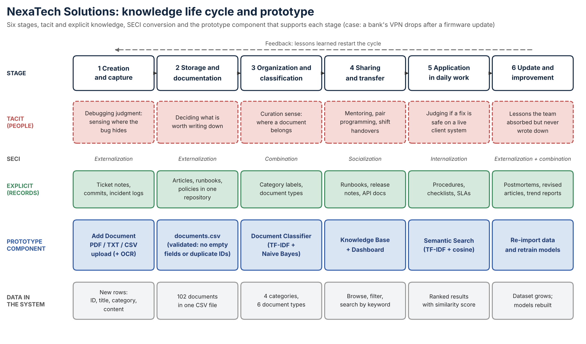
Figure 1. Knowledge life cycle at NexaTech Solutions and its relation to the prototype. Source: own elaboration (DIAGRAMS/lifecycle_map.py).
Stages explained with one case
A bank's VPN connection drops after every firmware update. The case follows the cycle as shown below.
Stage
What happens (VPN case)
Prototype support
1. Creation and capture
A support agent notices the pattern. With an operations engineer she finds that the update resets a tunnel setting and records the cause and workaround in the ticket.
Add Document receives the new document (manual entry, or PDF, TXT or CSV file; OCR for scanned PDFs).
2. Storage and documentation
The workaround is written as an article with a title and content and saved in the central repository.
Saved in documents.csv; the app validates required fields and rejects duplicated IDs or contents.
3. Organization and classification
The article is assigned to a knowledge category and tagged by product, client sector and error type.
The Document Classifier (TF-IDF + Naive Bayes) suggests the category (Technical Support); the author confirms it.
4. Sharing and transfer
The article is published; a senior agent mentors a junior one and development ships the fix in the next release.
Knowledge Base and Dashboard make the documents visible and filterable.
5. Application
Two weeks later another client reports the same symptom; an agent finds the article and restores the service in minutes.
Semantic Search ranks the documents by similarity: the query “the VPN connection drops after the firmware update” returns VPN Connectivity Troubleshooting first (Figure 18).
6. Update and continuous improvement
The postmortem leads to an automated configuration check, and the article is corrected.
New or corrected documents are imported and the search index and classifier are rebuilt automatically.
Tacit and explicit knowledge
Tacit knowledge lives in people (experience, skill and judgment), while explicit knowledge is written in documents, repositories and databases (Polanyi, 1966). The organization learns as it converts one into the other: socialization (tacit to tacit), externalization (tacit to explicit), combination (explicit to explicit) and internalization (explicit to tacit). The prototype works on the explicit side: it stores documents and makes them easy to classify and retrieve, so that other employees can internalize them.
3. Ontology and conceptual graph of organizational knowledge
The ontology describes the main concepts of the domain and how they relate. It has four layers: the organization and its areas; the knowledge categories that each area generates; the technical documents, which have a document type (policy, procedure, guideline, plan or runbook, support guide, incident report) and belong to one category; and the models and users that classify and retrieve them (classifier, search engine, employee and query). Dashed boxes are real documents from the dataset, shown as examples of instances; the green arrow between DOC007 and DOC003 shows the relation between documents (cosine similarity). The graph is Figure 2, on the landscape page that follows the tables.
How the ontology covers the required elements
Element
Representation in the NexaTech ontology
Main concepts of the domain
Organization (NexaTech Solutions), areas (Technical Support, Software Development, Infrastructure, Cybersecurity), knowledge categories, employee, natural-language query, classifier and search engine.
Document types
Policy, procedure, guideline, plan / runbook, support guide and incident report, all subtypes of Technical document (attributes: document_id, title, category, content).
Relationships between concepts
has area, generates / owns, asks, is processed by, subtype of.
Relationships between documents and concepts
contains (category → document), has type (document → type), is similar to (document ↔ document), ranks / retrieves (search engine → document), reads / assigns category (classifier → document / category). The Topic 3 exercise (section 6) populates these relations with all 102 documents.
Other technical documents (cosine similarity of TF-IDF vectors)
Employee
asks
Natural-language query
Natural-language query
is processed by
Search engine (TF-IDF + cosine similarity), which ranks and retrieves technical documents
Classifier (TF-IDF + Naive Bayes)
reads the text of / assigns
A technical document / its knowledge category
Examples of instances
Document
Title
Type
Category
DOC059
Multi-Factor Authentication Policy
Policy
Cybersecurity
DOC003
Network Monitoring Policy
Policy
Infrastructure
DOC007
Network Capacity Planning
Plan / runbook
Infrastructure
DOC099
Backend Development Guidelines
Guideline
Software Development
DOC045
User Account Creation Support
Support guide
Technical Support
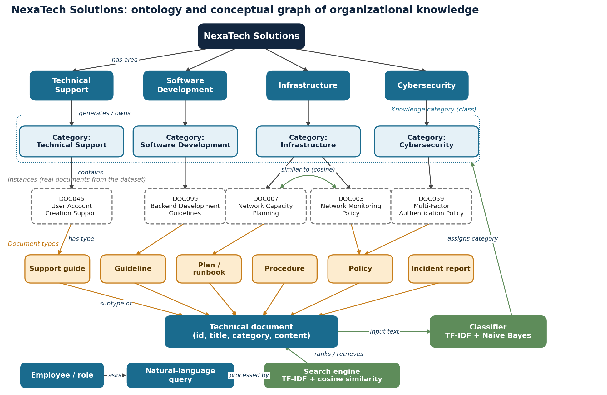
Figure 2. Conceptual graph of NexaTech: organization, areas, categories, instances, document types and models. Source: own elaboration.
4. How the prototype works
The prototype is a web application written in Python. Streamlit provides the interface, pandas handles the data and scikit-learn provides TF-IDF, cosine similarity and Naive Bayes (Pedregosa et al., 2011). PDF files are read with pypdf; scanned PDFs can be read with optional OCR (PyMuPDF and Tesseract). The scripts in SRC run the same techniques from the command line and save their results in RESULTS.
Repository structure
NexaTech-Knowledge-Management/
|-- app.py Streamlit application (interface + models)
|-- DATA/
| |-- documents.csv Knowledge base (102 documents)
| `-- test_documents.csv 8 new documents for classification tests
|-- SRC/
| |-- check_documents.py Dataset validation and summary
| |-- Classify_documents.py Classification prototype in 7 stages
| |-- evaluate_classifier.py 3- and 5-fold cross-validation, model comparison
| `-- semantic_search.py TF-IDF + cosine similarity search (query input)
|-- EXERCISES/ Practical exercises, Topics 1 to 6 (+ outputs)
|-- DIAGRAMS/ Life cycle map and conceptual graph
|-- RESULTS/ Predictions, confusion matrices, search results
|-- DOCS/ This report, its source and the screenshots
|-- requirements.txt
`-- README.md
Data flow
Loading: documents.csv is read and validated (columns document_id, title, category and content; no empty values or duplicated IDs).
Working text: each document gets search_text = title + content.
Vectorization: TfidfVectorizer (English stop words, 1-2 grams, sublinear TF for search) turns the texts into vectors.
Cached models: the models are trained once and rebuilt when the dataset changes.
Modules
Module
Function
Technique
Dashboard
Total documents, categories, average per category and chart of documents by category.
pandas, Streamlit charts
Semantic Search
Takes a natural-language query, computes its similarity with every document and shows the best results with their score. Filters: category, number of results and minimum similarity.
TF-IDF + cosine similarity
Document Classifier
Predicts the category of a new title or text and shows the score of each category.
TF-IDF + MultinomialNB (α = 0.1)
Add Document
Adds documents manually or imports CSV, PDF or TXT files; avoids duplicated IDs and contents and retrains the models.
pypdf, optional OCR
Knowledge Base
Browse and filter all stored documents, with keyword search in title or content.
pandas
How the search is computed
The query is transformed into the same TF-IDF space as the documents. The cosine similarity between the query vector q and each document vector d, cos(q, d) = (q · d) / (‖q‖ ‖d‖), is then calculated; a value closer to 1 means they share relevant terms (Manning et al., 2008). Documents with a similarity above zero are sorted from highest to lowest. The method is called semantic search in the project, but it is strictly lexical: it ranks by shared, weighted words and does not understand synonyms or paraphrases. The score measures textual similarity, not the probability that the answer is correct. Embeddings are the natural next step to capture meaning. SRC/semantic_search.py receives the query as an argument or in interactive mode and also prints the query terms and the terms each document matched, which explains every score.
How the classification works
The classifier learns from the documents that already have a category: TF-IDF represents each text and multinomial Naive Bayes estimates the most likely category. The score shown for each category is the model's estimated probability. The interface shows the predicted category and the score of each class, with a warning that it is an automated suggestion whose reliability depends on the amount and variety of training documents. SRC/Classify_documents.py runs the process in seven identifiable stages:
Stage
What the script does
1. Load the document set
Reads DATA/documents.csv (102 documents) and prints the category counts and the first input documents.
2. Train / test split
Stratified 75 % / 25 % split: 76 training and 26 testing documents.
3. TF-IDF vectorization
English stop words removed, unigrams and bigrams; vocabulary of 3,539 terms on the training set.
4. Train the models
Multinomial Naive Bayes with α = 0.1 (the model of the app) and Logistic Regression as a comparison.
5. Evaluate
Accuracy, precision, recall, F1, confusion matrix and the predicted category of each test document.
6. Classify new documents
Retrains on all 102 documents and classifies the 8 documents of DATA/test_documents.csv into the four predefined categories.
7. Save the results
RESULTS/classification_results.csv, new_documents_predictions.csv and confusion matrices.
Why α = 0.1. In the first version the classifier used the default smoothing of Naive Bayes (α = 1.0). With so few words per document, that smoothing hides the evidence of the smaller categories and the model predicted Infrastructure for 58 % of the documents, although only 32 % belong to it. Lowering α to 0.1 raised the cross-validation accuracy from 66.7 % to 84.3 % (3 folds) and the recall of Software Development in 5-fold cross-validation from 0.15 to 0.80 (section 5.6 and Topic 5).
5. Evidence of prototype development
The following screenshots show the prototype running. To reproduce them: pip install -r requirements.txt, then streamlit run app.py for the application and the commands of section 7 for the scripts.
5.1 Dashboard and input documents
The knowledge base has 102 documents in 4 categories (25.5 per category on average): Cybersecurity (29), Infrastructure (33), Software Development (20) and Technical Support (20).
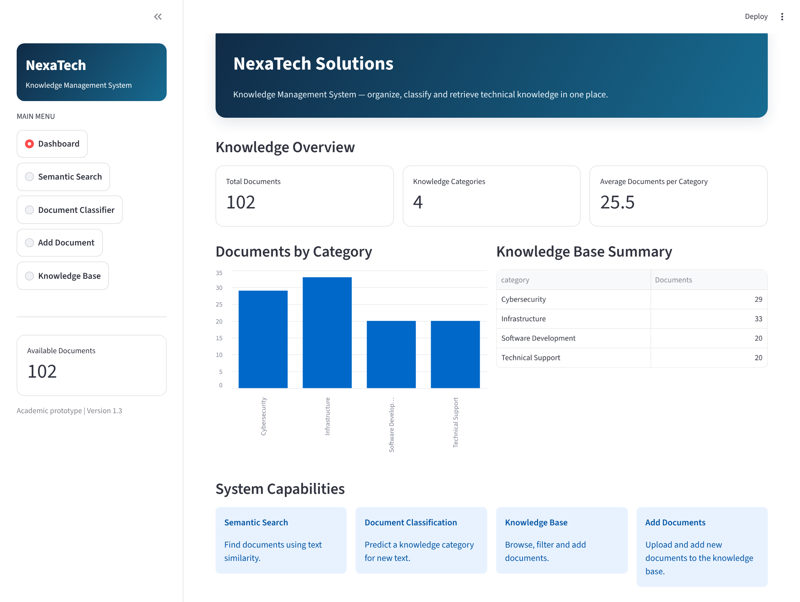
Figure 3. Dashboard with the overview of the knowledge base.
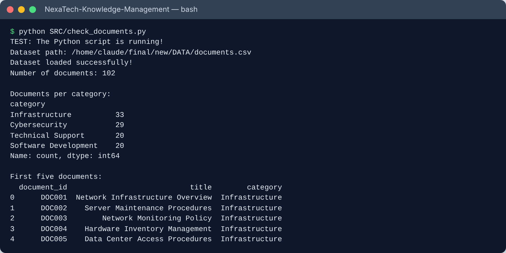
Figure 4. Input documents loaded and validated by SRC/check_documents.py.
5.2 Classification with the repository script
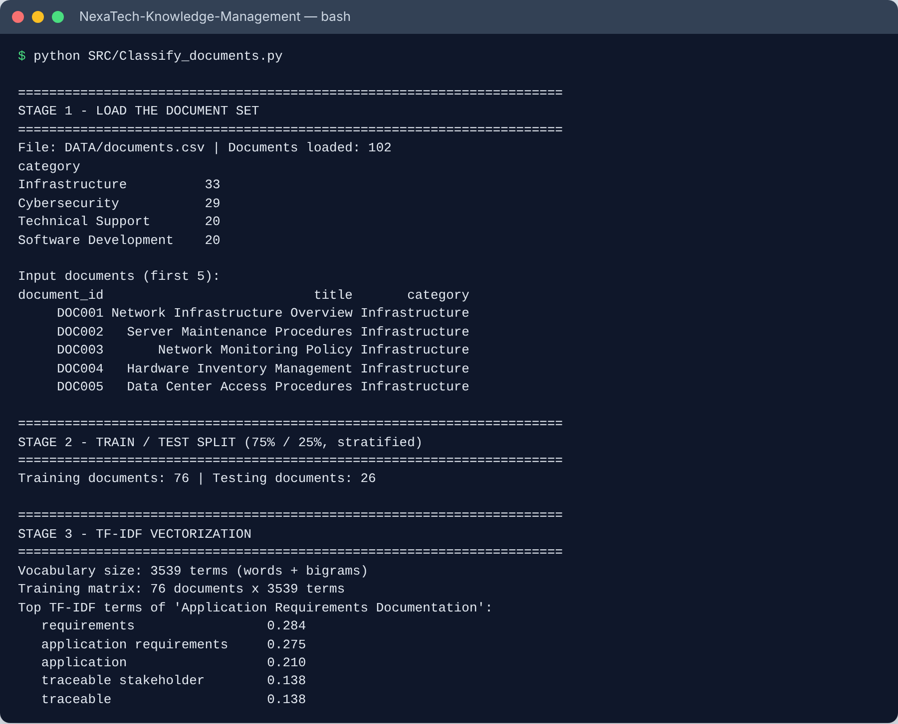
Figure 5. Stages 1 to 3 of Classify_documents.py: input documents, train/test split and TF-IDF vectorization.
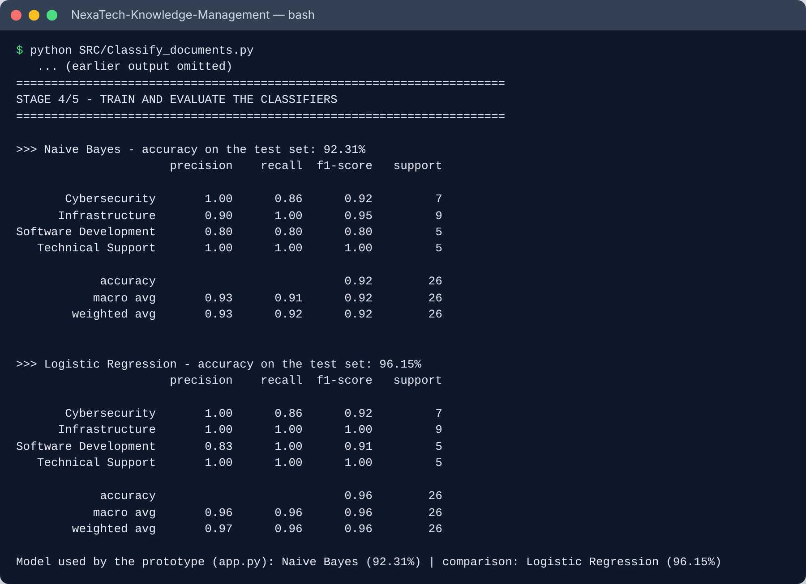
Figure 6. Stages 4 and 5: training and evaluation of Naive Bayes and Logistic Regression on 26 test documents.
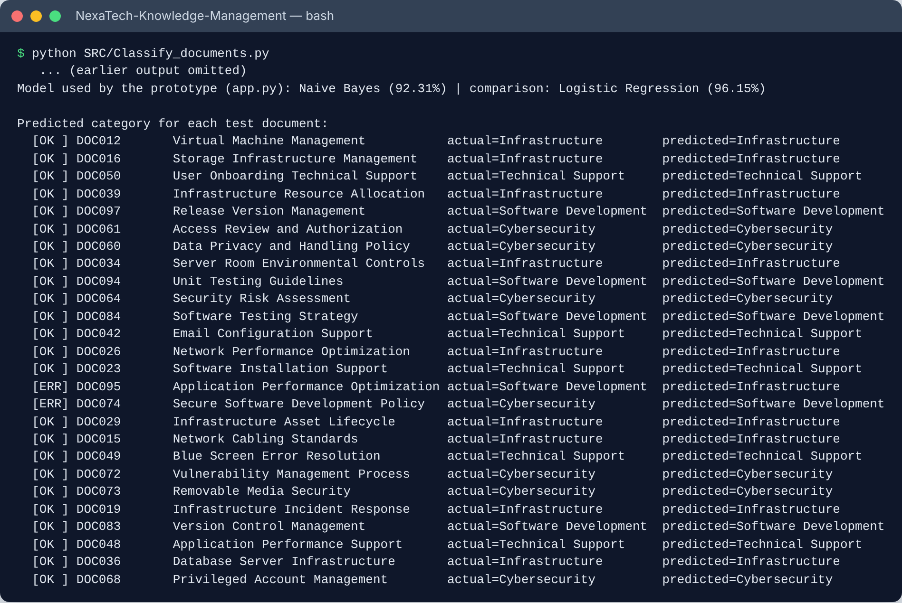
Figure 7. Predicted category of each test document (24 of 26 correct).Figure 8. Confusion matrix of Naive Bayes on the test set.
Analysis: Naive Bayes reaches 92.3 % accuracy on the 26 test documents (Logistic Regression 96.2 %). Technical Support and Infrastructure are fully recalled. The two errors are borderline documents: Application Performance Optimization (DOC095, Software Development) shares performance and monitoring vocabulary with Infrastructure, and Secure Software Development Policy (DOC074, Cybersecurity) is about software development by definition. Software Development recall rose from 0.20 in the first version to 0.80.
5.3 Classification tests with new documents
Eight documents that are not in the training data (DATA/test_documents.csv, two per category) were classified by the script. The first three are the tests of the first version of this report.
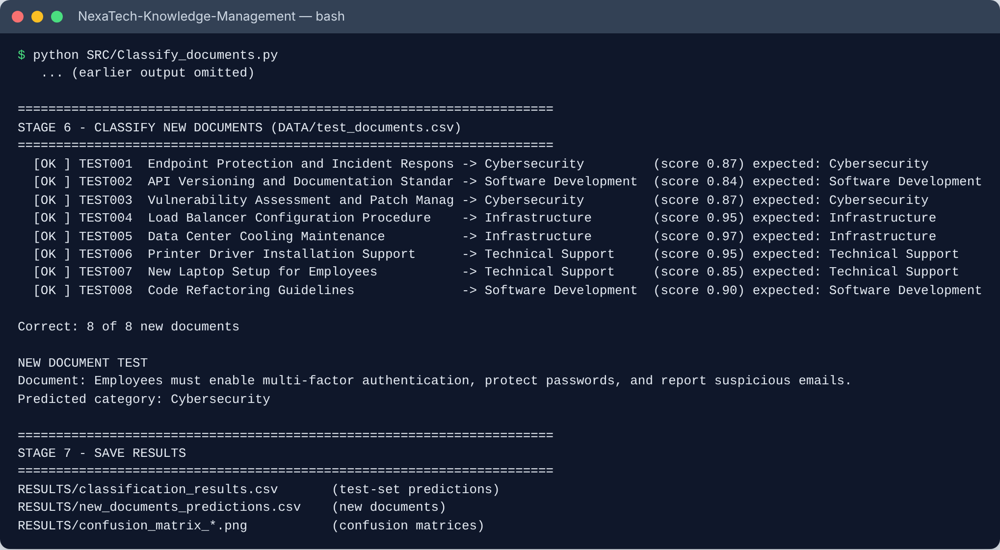
Figure 9. Stage 6: the eight new documents are assigned to the predefined categories (8/8 correct).
Test text
Expected category
Predicted category
Score
Correct?
Endpoint Protection and Incident Response
Cybersecurity
Cybersecurity
87.2%
Yes
API Versioning and Documentation Standards
Software Development
Software Development
84.3%
Yes
Vulnerability Assessment and Patch Management
Cybersecurity
Cybersecurity
86.6%
Yes
Load Balancer Configuration Procedure
Infrastructure
Infrastructure
95.5%
Yes
Data Center Cooling Maintenance
Infrastructure
Infrastructure
96.9%
Yes
Printer Driver Installation Support
Technical Support
Technical Support
95.4%
Yes
New Laptop Setup for Employees
Technical Support
Technical Support
84.7%
Yes
Code Refactoring Guidelines
Software Development
Software Development
90.4%
Yes
The same three tests of the first version were repeated in the application (Figures 10 to 12). In the first version the API document was classified as Infrastructure (33.5 %); with α = 0.1 it is classified correctly as Software Development (84.3 %), and the scores of the other two tests rose from 46.0 % and 39.9 % to 87.2 % and 86.6 %, which means higher confidence.
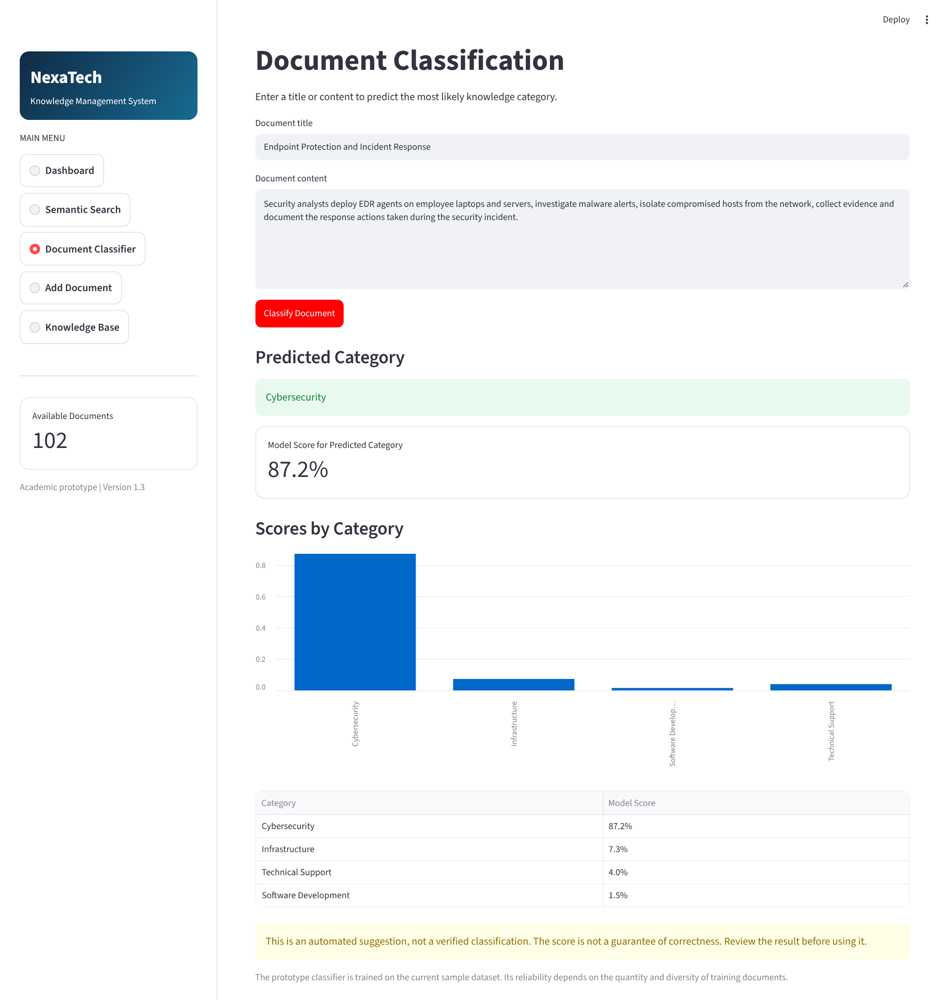
Figure 10. Test 1: Endpoint Protection and Incident Response → Cybersecurity (87.2%).
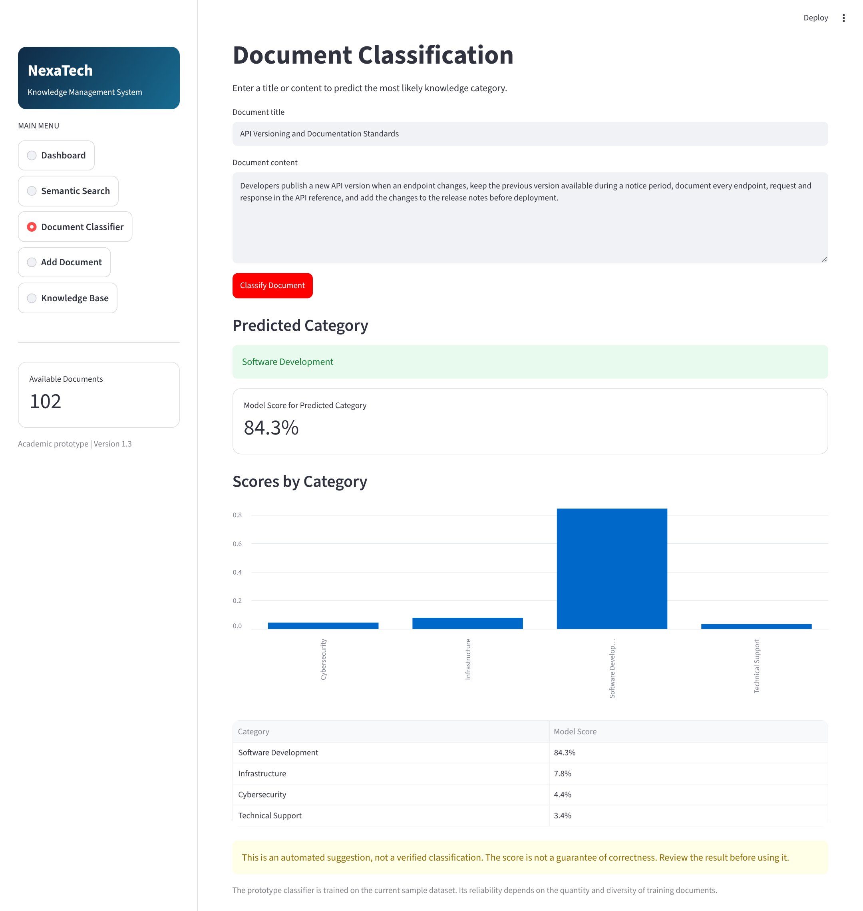
Figure 11. Test 2: API Versioning and Documentation Standards → Software Development (84.3%).
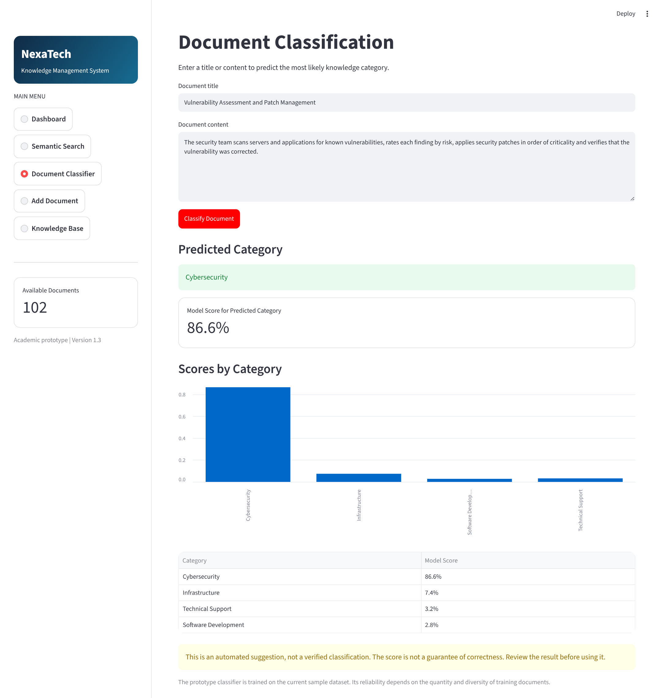
Figure 12. Test 3: Vulnerability Assessment and Patch Management → Cybersecurity (86.6%).
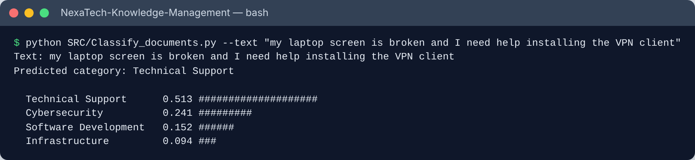
Figure 13. Classification of a free text written by the team: Technical Support (51.3%), Cybersecurity second because of the word “VPN”.
5.4 Semantic search examples
Example 1. Query: how can we protect employee acounts (typed with a spelling mistake, exactly as it was run).
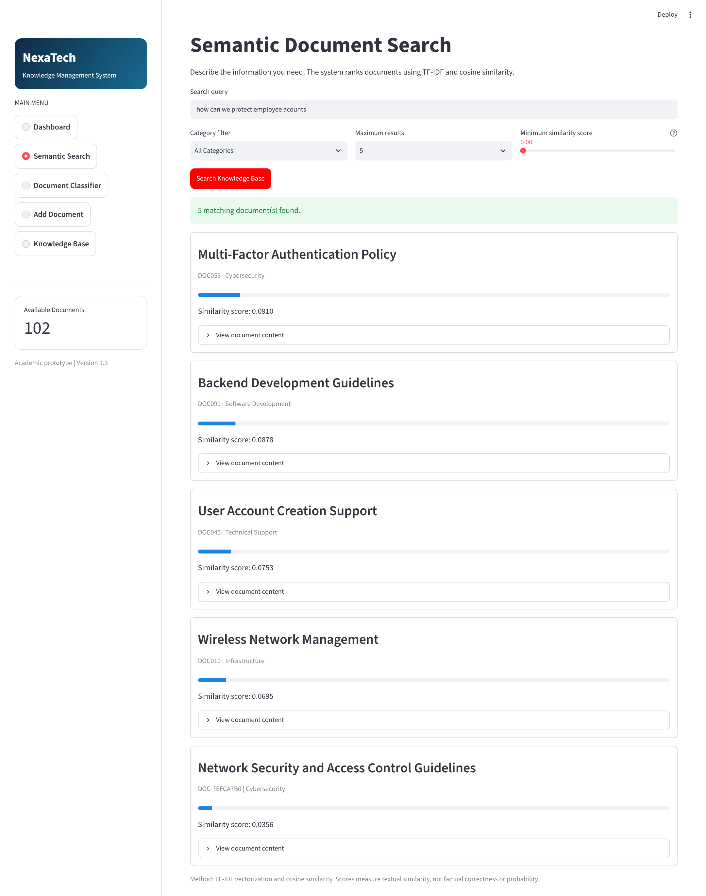
Figure 14. Search results for protecting employee accounts (application screenshot).
#
Retrieved document
Category
Cosine similarity
1
DOC059 · Multi-Factor Authentication Policy
Cybersecurity
0.0910
2
DOC099 · Backend Development Guidelines
Software Development
0.0878
3
DOC045 · User Account Creation Support
Technical Support
0.0753
Interpretation: the multi-factor authentication policy is the most relevant result for protecting accounts. The second result (backend guidelines) only shares the general term “protect” and is not relevant, and it ranks above account-creation support, which is more related to the topic. Scores are low because the query is short and contains a misspelled word (“acounts”), which removes an exact term match in TF-IDF: only “protect” and “employee” remain in the query vector. Example 3 repeats the question without the mistake.
Example 2. Query: What are the procedures for handling network failures or capacity issues?
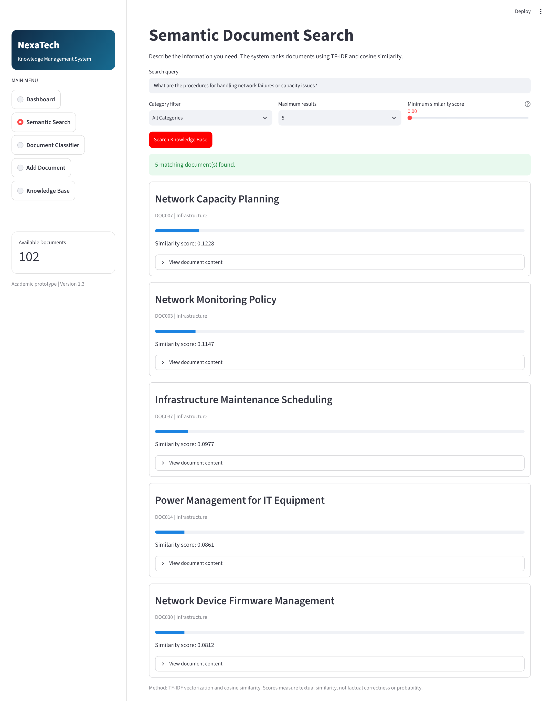
Figure 15. Search results for network failures and capacity issues (application screenshot).
#
Retrieved document
Category
Cosine similarity
1
DOC007 · Network Capacity Planning
Infrastructure
0.1228
2
DOC003 · Network Monitoring Policy
Infrastructure
0.1147
3
DOC037 · Infrastructure Maintenance Scheduling
Infrastructure
0.0977
Interpretation: the three top documents belong to Infrastructure and deal with capacity, monitoring and maintenance of the network, so they answer the information need directly. DOC007 matches “capacity” and “network”, DOC003 also “failures”. Scores are higher than in example 1 because the query is more specific and uses terms that appear in those documents.
Examples 3 and 4 (script).SRC/semantic_search.py prints the query terms kept after removing stop words, the score of each document and the terms it matched.
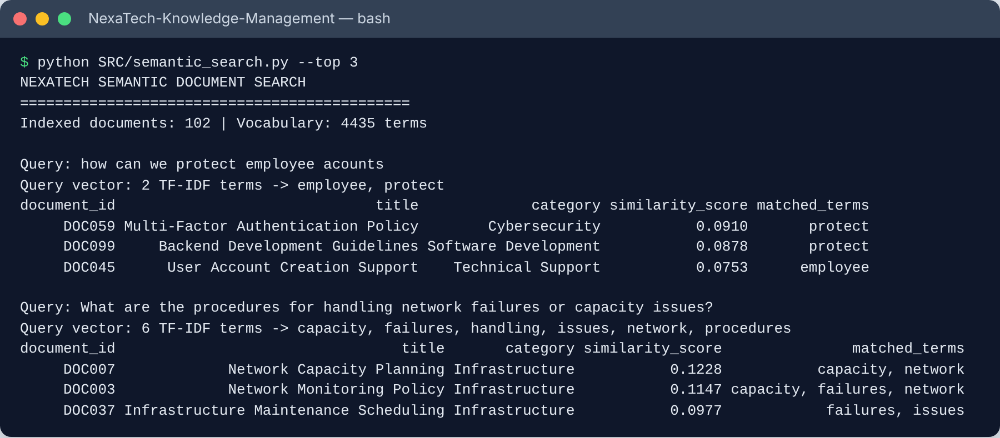
Figure 16. Examples 1 and 2 reproduced with the script, with the matched terms of each document.
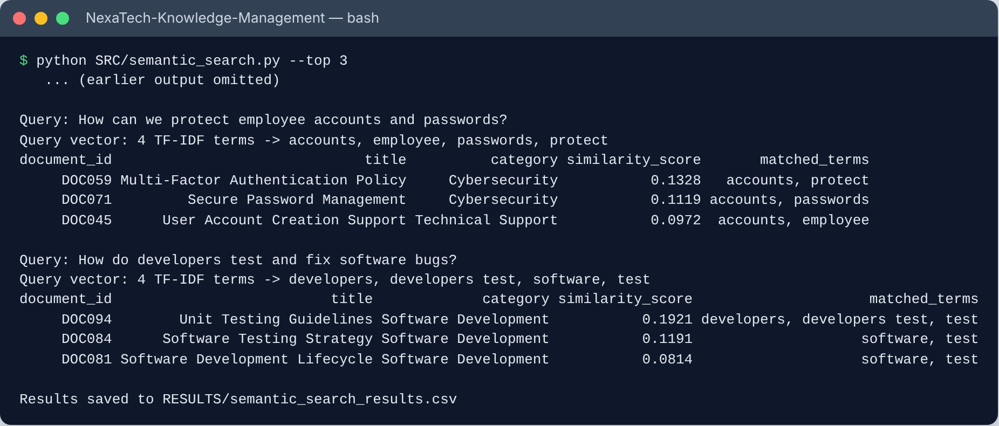
Figure 17. Examples 3 and 4 run with the script.
Query
Top results (cosine similarity)
Why they answer the information need
3. How can we protect employee accounts and passwords?
DOC059 Multi-Factor Authentication Policy (0.1328) DOC071 Secure Password Management (0.1119) DOC045 User Account Creation Support (0.0972)
With correct spelling the query keeps “accounts” and “passwords”: the scores rise and the irrelevant backend guideline of example 1 is replaced by the password management document.
4. How do developers test and fix software bugs?
DOC094 Unit Testing Guidelines (0.1921) DOC084 Software Testing Strategy (0.1191) DOC081 Software Development Lifecycle (0.0814)
All three are Software Development documents about testing; the bigram “developers test” gives DOC094 the highest score.
Examples 5 and 6 (interactive mode). The user types questions in natural language one after another. Example 5 is the VPN case of section 2.
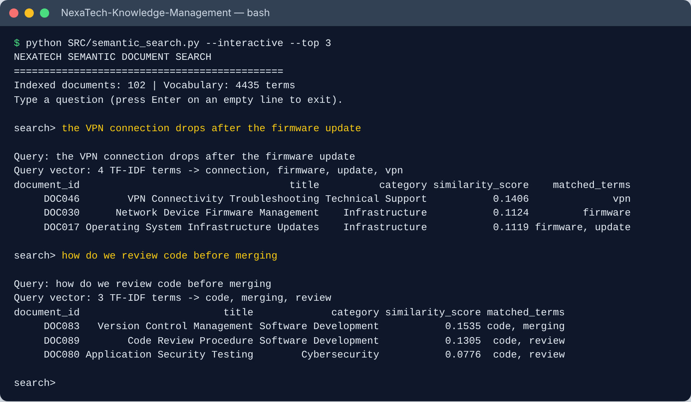
Figure 18. Interactive search: the VPN case returns VPN Connectivity Troubleshooting first (0.1406); the code review question returns Version Control Management (0.1535) and Code Review Procedure (0.1305).
Interpretation: for the VPN case the first result is the support guide for VPN connectivity, and the next two are about firmware and updates, the cause of the problem. For the code review question, the first two results are the version control (branches, merging) and code review documents; the third, Application Security Testing, shares “code” and “review” but is less useful.
5.5 Knowledge base browsing
The Knowledge Base module filters by category and searches by keyword in title or content. It shows all stored documents with their ID, title, category and content.
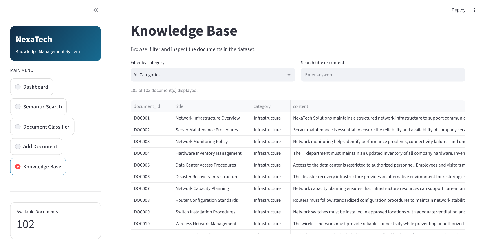
Figure 19. Knowledge Base module with the document set.
5.6 Classifier evaluation with the repository scripts
Two scripts in SRC measure the classifier on the committed dataset (102 documents). The hold-out predictions are saved in RESULTS/classification_results.csv. The table compares the first version of the classifier with the current one.
Configuration
Script
Hold-out 75/25
3-fold CV
5-fold CV
First version: Naive Bayes, α = 1.0
Classify_documents.py (v1)
76.9%
66.7%
72.4%
Current: Naive Bayes, α = 0.1 (app.py)
Classify_documents.py
92.3%
84.3%
85.1%
Comparison: Logistic Regression (balanced)
evaluate_classifier.py
96.2%
90.2%
89.1%
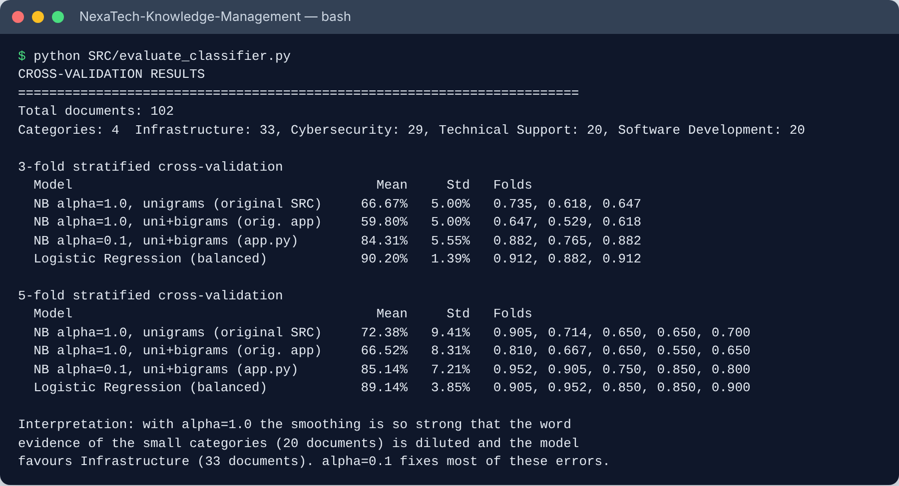
Figure 20. Cross-validation with SRC/evaluate_classifier.py (original and current configurations).
Analysis: the first version reached 76.9 % on the hold-out split but only 66.7 % in cross-validation, and Software Development was missed 4 times out of 5. The cause was not only the size of the dataset: the default smoothing α = 1.0 pushed the model towards the largest category (Infrastructure). With α = 0.1 every configuration improves, and the cross-validation results (84–85 %) are now close to the hold-out result, so the estimate is more stable. Logistic Regression is a little better, but Naive Bayes was kept because it is simple, fast to retrain in the app and gives interpretable probabilities. A realistic expectation for the current dataset is between 84 % and 92 %.
6. Evidence of practical exercises (Topics 1 to 6)
During the first weeks of the course the team carried out practical exercises with the NexaTech documents. Each one contributed to a part of the project. The scripts are in EXERCISES and their outputs in EXERCISES/outputs; SRC/check_documents.py (data exploration) and SRC/evaluate_classifier.py (model validation) also started as exercises.
Topic
Exercise
Main result
Contribution to the project
1
Knowledge audit: tacit vs explicit knowledge, SECI model
12 knowledge assets of 4 areas, half of them tacit; how many documents already capture each one
Defined the four knowledge categories and the tacit/explicit rows of the life cycle map
2
Text preprocessing, Bag-of-Words and TF-IDF by hand
“authentication” (in 1 of 3 docs) gets idf 1.69, “accounts” (2 of 3) gets 1.29
Justified stop-word removal and TF-IDF for search and classification
3
Knowledge representation: the ontology as triples
325 triples (19 schema, 306 instance); document types assigned to all 102 documents
Validated the ontology of Figure 2 with real instances
4
Information retrieval: Boolean model vs vector space model
Boolean AND returns 0–1 documents per query; TF-IDF ranking MAP = 0.699
Chose ranked TF-IDF + cosine similarity for the search
5
Classification tests: features, models and smoothing
CV 0.84–0.93; α = 1.0 predicts Infrastructure for 58 % of documents; α = 0.1 reaches 0.85
Found the cause of the low accuracy and changed α to 0.1 in app.py
6
Document similarity and K-Means clustering
Same-category similarity 2.1× higher; purity 0.58 with 4 clusters
Supports the “is similar to” relation and shows that categories share vocabulary
Topic 1 – Knowledge audit
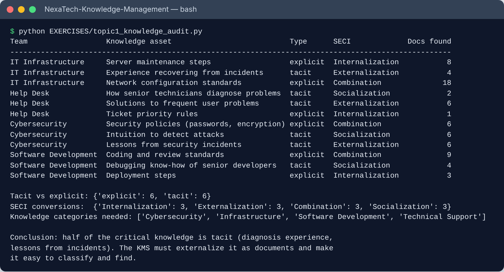
Figure 21. Knowledge assets per area, type of knowledge, SECI conversion and documents found in the dataset.
Topic 2 – Text preprocessing and TF-IDF
A sentence of DOC059 is followed through tokenization, stop-word removal and stemming; then a Bag-of-Words matrix and TF-IDF weights are computed by hand for three password-related documents and compared with scikit-learn.
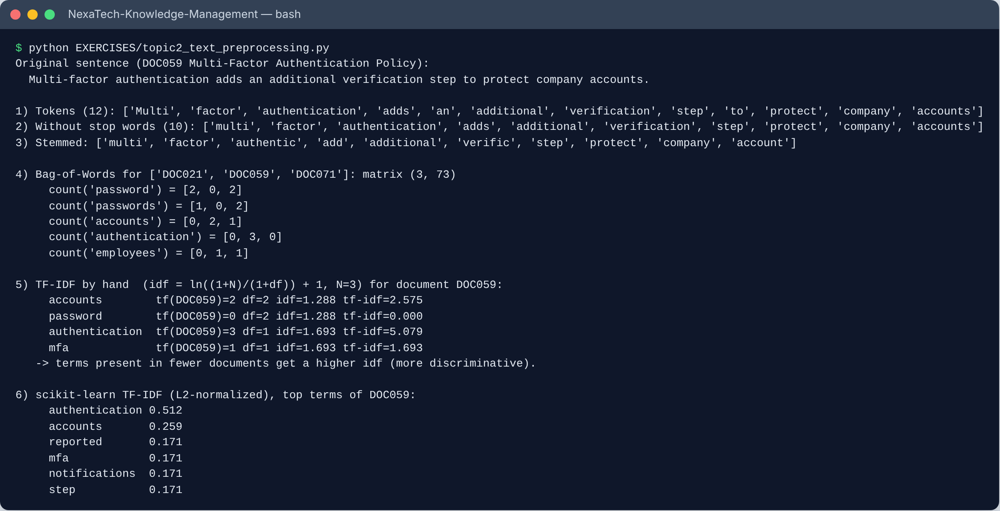
Figure 22. Topic 2 output.
Topic 3 – Knowledge representation
The conceptual graph of Figure 2 is encoded as subject–predicate–object triples and populated with the dataset: every document gets its category, its document type (from the title) and its most similar document.
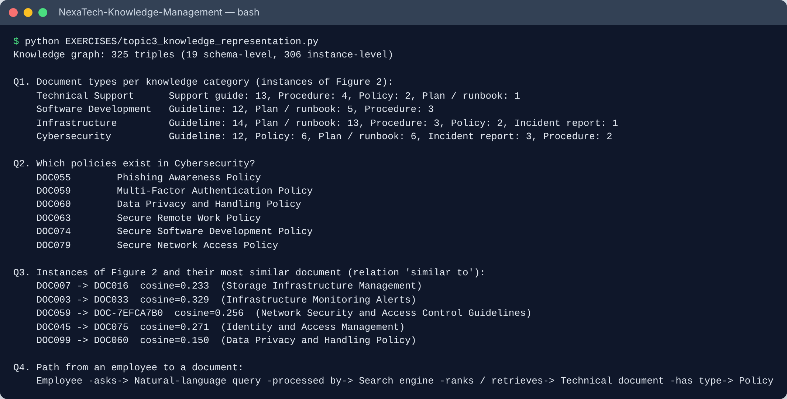
Figure 23. Topic 3 output: document types per category, queries over the graph and “is similar to” links of the instances of Figure 2.
Topic 4 – Information retrieval
An inverted index is built and four queries with manual relevance judgments are run with the Boolean model and with TF-IDF ranking, measuring Precision@3, Recall@3 and Average Precision (Manning et al., 2008).
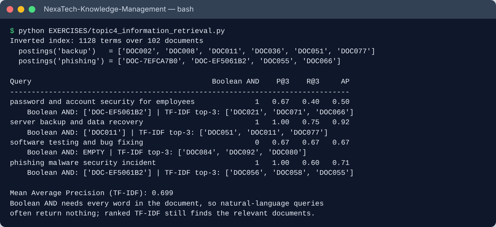
Figure 24. Topic 4 output.
Topic 5 – Classification tests
Three feature representations and three models are compared with 5-fold cross-validation; then the smoothing parameter of Naive Bayes is tested and the model is tried with short informal texts.
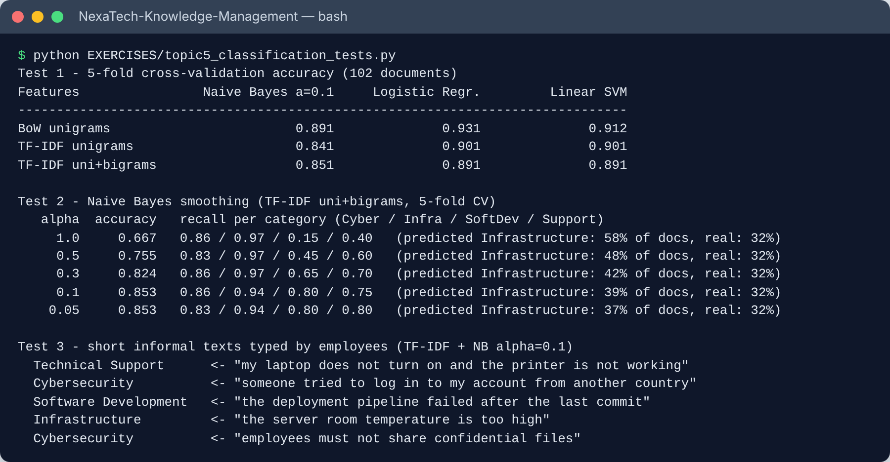
Figure 25. Topic 5 output: with α = 1.0 only 15 % of Software Development documents are recognised; with α = 0.1, 80 %.
Topic 6 – Similarity and clustering
The cosine similarity between all documents is computed to recommend related documents, and K-Means groups the documents without labels to compare the clusters with the four categories.
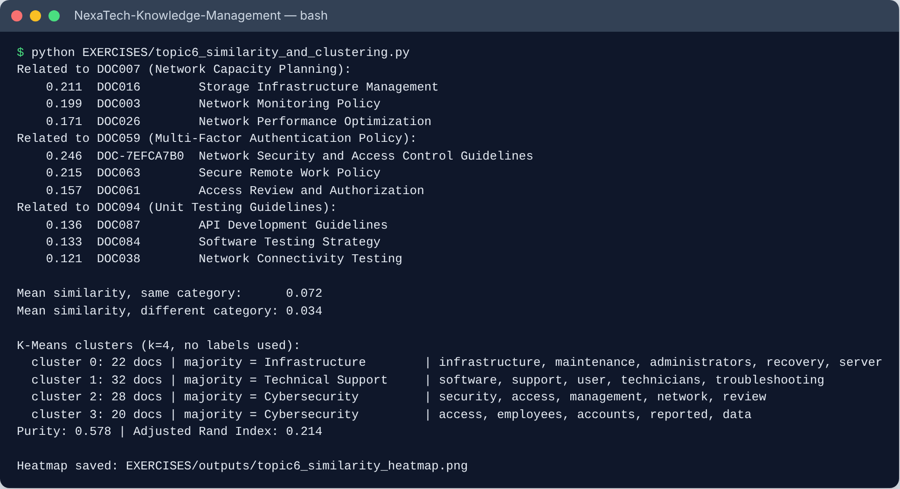
Figure 26. Topic 6 output.
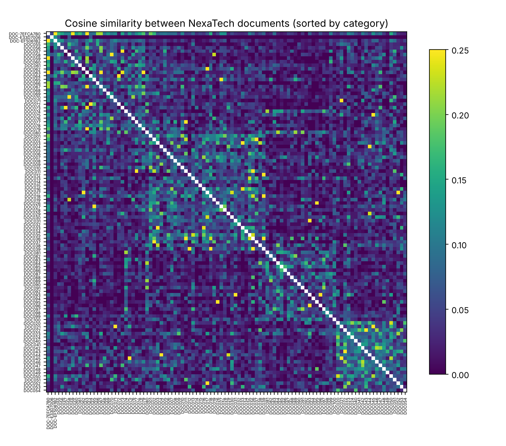
Figure 27. Cosine similarity between documents, sorted by category.
Interpretation: documents are on average 2.1 times more similar to documents of their own category, which supports the “is similar to” relation of the ontology. The clusters only partly match the categories (purity 0.58): Cybersecurity documents appear in two clusters and Technical Support shares many terms with the other areas, which is the same overlap seen in the classification errors.
It contains the application (app.py), the dataset and the test documents (DATA), the classification and search scripts (SRC), the practical exercises (EXERCISES), the diagrams (DIAGRAMS), the execution results (RESULTS), this report with its screenshots (DOCS) and the dependencies (requirements.txt).
pip install -r requirements.txt
streamlit run app.py # web application
python SRC/check_documents.py # dataset summary
python SRC/Classify_documents.py # 7-stage classification + new documents
python SRC/Classify_documents.py --text "my VPN does not connect"
python SRC/evaluate_classifier.py # cross-validation
python SRC/semantic_search.py # example queries
python SRC/semantic_search.py "how can we protect employee accounts"
python SRC/semantic_search.py --interactive # type your own queries
python EXERCISES/topic1_knowledge_audit.py # ... up to topic6
8. Conclusion
The prototype puts the knowledge life cycle of NexaTech into practice: documents are added, stored, classified automatically, shared, retrieved with similarity search and updated, and every stage of the map has a component of the application behind it. The ontology describes the areas, categories, document types and models, and the exercises populated it with the 102 real documents.
The tests show that the classifier and the search work on the sample dataset and also expose their limits. The evaluation found that the low accuracy of the first version (66.7 % in cross-validation) came mainly from the default smoothing of Naive Bayes; with α = 0.1 the classifier reaches 92.3 % on the hold-out split and 85.1 % in 5-fold cross-validation, and it classifies the 8 new test documents correctly, including the API document that failed before. Search returns the right documents for specific, well-written queries and loses quality with misspelled or very short ones, because TF-IDF compares words, not meaning.
Future work includes adding more documents to balance the categories, evaluating Logistic Regression in the app, using embeddings for semantic search, adding spelling correction to queries and adding document versioning. AI supports the process, but specialists keep the final decision.
References
Dalkir, K. (2017). Knowledge management in theory and practice (3rd ed.). MIT Press.
Manning, C. D., Raghavan, P., & Schütze, H. (2008). Introduction to information retrieval. Cambridge University Press.
Nonaka, I., & Takeuchi, H. (1995). The knowledge-creating company: How Japanese companies create the dynamics of innovation. Oxford University Press.
Pedregosa, F., Varoquaux, G., Gramfort, A., Michel, V., Thirion, B., Grisel, O., … Duchesnay, É. (2011). Scikit-learn: Machine learning in Python. Journal of Machine Learning Research, 12, 2825–2830.
Polanyi, M. (1966). The tacit dimension. Doubleday.